Chapter 22: Lists & Navigation¶
Most apps have at least one view that displays a collection of similar items in a table or grid. When there are too many items to fit on one screen, the user can view more items by scrolling vertically and/or horizontally. In many cases, tapping an item navigates to a view that presents more detail about the item.
In this section, you’ll create the RWFreeView app. It fetches information about free raywenderlich.com video episodes and streams them for playback in the app. Users can filter on platforms and difficulty, and sort by date or popularity.
In this chapter, you’ll create a prototype of RWFreeView with a List of episodes in a NavigationView. Tapping a list item pushes a detail view onto the navigation stack. The starter project already contains PlayerView.swift, which displays a VideoPlayer, like the one in HIITFit. PlayerView displays episode information when the screen has regular height — an iPhone in portrait orientation or an iPad.
Getting started¶
Open the RWFreeView app in the starter folder. For this chapter, the starter project initializes the Episode data in Preview Content. In Chapter 24, “Downloading Data”, you’ll fetch this data from api.raywenderlich.com.
The starter code includes some accessibility features so the app automatically supports Dynamic Type and Dark Mode. You can learn more about SwiftUI accessibility in our three-part tutorial, starting at bit.ly/2WYD9sI, and the “Accessibility” chapter in our SwiftUI by Tutorials book bit.ly/32oFTCs.
List¶
The SwiftUI List view is the easiest way to present a collection of items in a view that scrolls vertically. You can display individual views and loop over arrays within the same List. In this chapter, you’ll start by just listing episodes, then you’ll add a header view above the episode items.
To present a list of episodes, the syntax looks a lot like ForEach.
➤ In ContentView.swift, replace the contents of ContentView with the following code:
@StateObject private var store = EpisodeStore()
var body: some View {
List(store.episodes, id: \.name) { episode in
EpisodeView(episode: episode)
}
}
You initialize EpisodeStore, which creates a sample episodes array. Then you tell List to loop over episodes and you provide an id. Like ForEach, List expects each item to have an identifier, so it knows which item is in which row. The argument \.name tells List that each item is identified by that property value.
Creating a gradient background¶
EpisodeView is already defined in EpisodeView.swift to display useful information about the episode. It contains an icon to indicate that selecting it will play the video. The PlayButtonIcon background is a custom color:

It’s not hard to guess what you’re going to do next. You’ll change the background to a gradient that goes from dark to light, horizontally across the icon.
➤ In PlayButtonIcon.swift, add this property to PlayButtonIcon:
let gradientColors = Gradient(
colors: [Color.gradientDark, Color.gradientLight])
You specify the colors that make up the gradient. You can use as many colors as you like. For this small icon, two colors are enough.
Note: I defined these colors in the assets catalog Assets.xcassets/colors. The designer picked these colors to look good in both light and dark appearance, so each custom color has only a Universal setting. In ColorExtension.swift, I add gradientDark and gradientLight to the standard Color values.
➤ Now replace .fill(Color.gradientDark) with the following:
.fill(
LinearGradient(
gradient: gradientColors,
startPoint: .leading,
endPoint: .trailing))
You supply an array of gradient colors. This is a LinearGradient, so you supply start and end points. These values apply the gradient along the icon’s horizontal axis, grading from dark on the leading edge to light on the trailing edge.

Other start and end points create gradients along different axes, for example, vertically from top to bottom or diagonally from topLeading to bottomTrailing.
There are two other types of gradient: RadialGradient grades from the start radius to the end radius, and AngularGradient grades from the start angle to the end angle.
Adapting to Dark Mode automatically¶
EpisodeView uses standard system and UI element colors to automatically adapt when users turn on Dark Mode and built-in text styles like headline to support Dynamic Type. Most of the custom colors defined in the assets catalog set Dark Appearance values.
Note: Apple’s Human Interface Guidelines ▸ Visual Design ▸ Color apple.co/39GwXvn shows system colors for dark and light modes and lists UI element colors. And Human Interface Guidelines ▸ Visual Design ▸ Typography apple.co/39HydhD has a table of text styles, weights and sizes.
EpisodeView also uses AdaptingStack to switch from HStack to VStack when the user selects Larger Text in Settings. AdaptingStack comes from code presented in WWDC 2019 Session 412: Debugging in Xcode 11 (apple.co/3u0kr2z).
➤ In ContentView.swift, use the preview inspector to switch Color Scheme to Dark or, in previews, add this modifier to ContentView():
.preferredColorScheme(.dark)
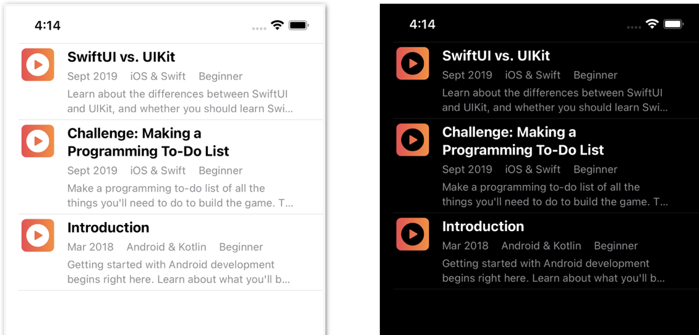
➤ Switch Color Scheme back to Light or, in previews, comment out .preferredColorScheme(.dark).
NavigationView¶
In Chapter 15, “Structures, Classes & Protocols”, you used NavigationView so you could add toolbar buttons to CardDetailView. Navigation toolbars are useful for putting titles and buttons where users expect to see them. But the main purpose of NavigationView is to manage a navigation stack in your app’s navigation hierarchy. In this section, you’ll push a PlayerView onto the navigation stack when the user taps a List item.
Start by adding a navigation bar with a title.
➤ In ContentView.swift, embed List in NavigationView and modify it to set the screen’s title:
NavigationView {
List(store.episodes, id: \.name) { episode in
EpisodeView(episode: episode)
}
.navigationTitle("Videos")
}
Notice navigationTitle modifies List, not NavigationView. A NavigationView can contain alternative root views, each with its own .navigationTitle and toolbars.
Note: navigationTitle replaces navigationBarTitle, which is deprecated.
➤ Refresh the preview. By default, you get a large title:
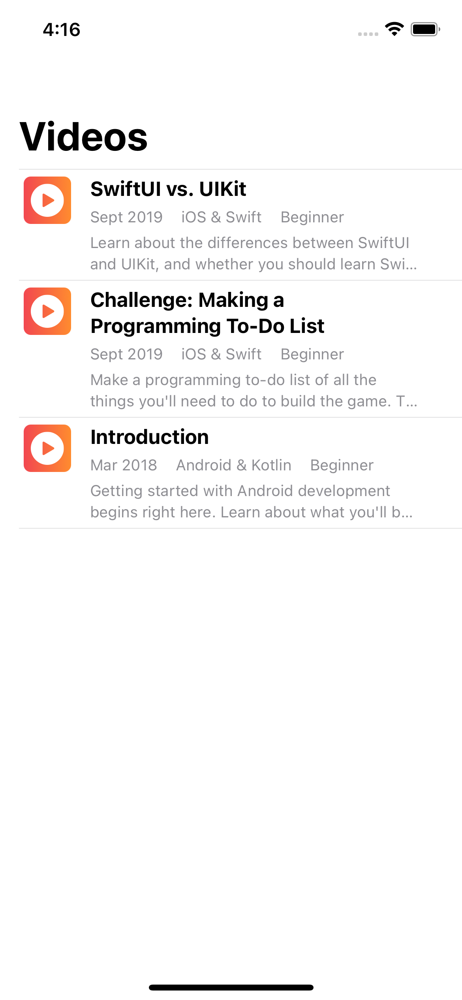
Modifying the navigation bar¶
The Figma design for this app calls for a black navigation bar in both light and dark color schemes.
➤ Add the following method to ContentView, below body:
init() {
// 1
let appearance = UINavigationBarAppearance()
appearance.backgroundColor = UIColor(named: "top-bkgd")
appearance.largeTitleTextAttributes =
[.foregroundColor: UIColor.white]
appearance.titleTextAttributes =
[.foregroundColor: UIColor.white]
// 2
UINavigationBar.appearance().tintColor = .white
// 3
UINavigationBar.appearance().standardAppearance = appearance
UINavigationBar.appearance().compactAppearance = appearance
UINavigationBar.appearance().scrollEdgeAppearance = appearance
// 4
UISegmentedControl.appearance()
.selectedSegmentTintColor = UIColor(named: "list-bkgd")
}
As a structure, ContentView has a default initializer, so you usually don’t have to write an init() method. In this case, you need to set some attributes that you can’t access with SwiftUI. SwiftUI doesn’t yet have an API to modify the appearance of the navigation bar, so you have to fall back on UIKit’s UINavigationBarAppearance to configure its attributes.
- You create an instance of
UINavigationBarAppearancethen set the background color to almost-black and, for both large and standard size titles, you set text color to white. UINavigationBarAppearancedoesn’t have atintColorproperty, so you set it in theUIAppearanceproxy of the underlyingUINavigationBar. This setting affects the color of the back button text and back arrow.- You assign your
UINavigationBarAppearanceconfiguration to all three appearances ofUINavigationBar: standard-height, compact-height and when the edge of scrollable content reaches the matching edge of the navigation bar. - You’ll soon add a header view with a segmented control. Here, you set the color of the selected segment to match the color you’ll use for the list background.
➤ Refresh the preview:
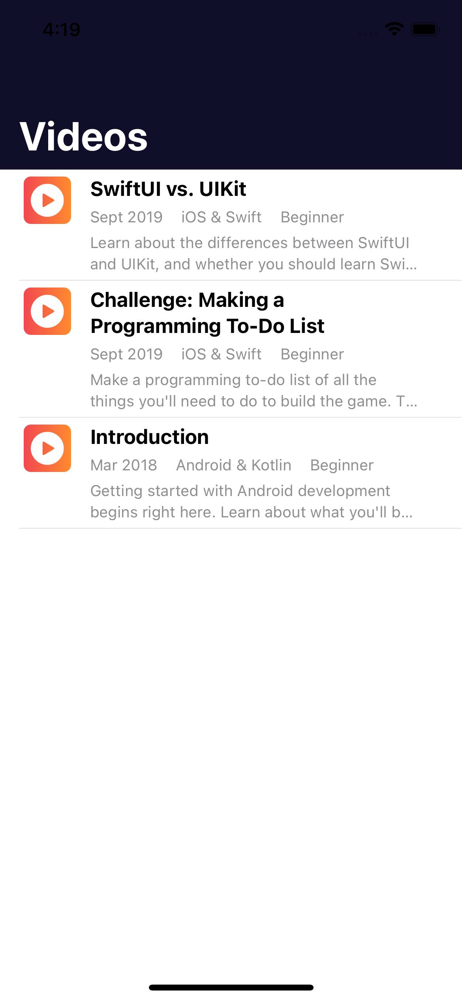
Now you’re all set to navigate to PlayerView and add a toolbar button.
Navigating to a detail view¶
To see that back button you tinted white, you’ll navigate to the video player view when the user taps a list item.
➤ In the List closure, replace EpisodeView(episode: episode) with this:
NavigationLink(destination: PlayerView(episode: episode)) {
EpisodeView(episode: episode)
}
You embed the content view of the List row in a NavigationLink and set the destination to PlayerView.
➤ Live-preview ContentView and tap an item:

Each List row acquires a disclosure indicator, telling the user there’s more to see.
ContentView is currently the only view in the navigation stack. When you tap an item, NavigationView pushes PlayerView onto the navigation stack: It’s now the top view on the stack, so it’s the view that’s visible.
NavigationView gives you a “back” button, labeled the same as the root view’s navigationTitle. Because you set UINavigationBar.appearance().tintColor to white, the back button’s arrow and “Videos” label are both white.
AVPlayer takes care of streaming the video from its remote location. The episode’s title slide appears when the video is ready to play.
Now PlayerView needs a navigation title.
➤ In PlayerView.swift, add these two modifiers to the top-level VStack:
.navigationTitle(episode.name)
.navigationBarTitleDisplayMode(.inline)
You use the episode’s name as the title for this view, and you specify a centered normal size title to override the default large title.
You don’t embed the VStack in NavigationView because PlayerView is in the navigation stack controlled by the NavigationView in ContentView.
If you want the preview of PlayerView to display the navigation title, embed it in NavigationView.
➤ In PlayerView.swift, in previews, wrap PlayerView in NavigationView:
NavigationView {
PlayerView(episode: store.episodes[0])
}
The portrait-orientation preview now displays the navigation title.
➤ In ContentView.swift, run live-preview and tap an item:

➤ Tap the back button to pop this view off the navigation stack, revealing ContentView again.
Opening the real page in a browser¶
There’s an even easier way to play the video. Here’s how you open the raywenderlich.com page in the device’s default browser.
➤ In ContentView.swift, comment out the NavigationLink(...) { ... } code and type the following code in its place:
Link(destination: URL(string: episode.linkURLString)!) {
EpisodeView(episode: episode)
}
The Link control opens its destination URL in the associated app. You create the URL from the Episode computed property linkUrlString, which is just a redirect URL:
let uri: String // redirects to the real web page
var linkURLString: String {
"https://www.raywenderlich.com/redirect?uri=" + uri
}
The associated app is Safari (in a simulator) or your device’s default browser.
➤ Build and run in the simulator or on your device. Tap an item to open the video’s web page in Safari or your device’s default browser:

Link takes users from your app to their browser app, giving them access to their browser settings and saved passwords. They can easily sign in, explore the site and even make purchases, without sharing any secure data or history with your app.
Note: If you see a note that a newer version exists, it’s because this older version has been around longer, so has had more views.
➤ To return to your app, tap the RWFreeView back button.
➤ Comment out or delete the Link(...) { ... } code and uncomment the NavigationLink code.
Navigation toolbar button¶
Now, you’ll add a button to the navigation toolbar, to let users filter on platform (iOS, Android etc.) and difficulty (Beginner, Intermediate, Advanced).
➤ Add this code below .navigationTitle("Videos"):
.toolbar {
ToolbarItem {
Button(action: { }) {
Image(systemName: "line.horizontal.3.decrease.circle")
.accessibilityLabel(Text("Shows filter options"))
}
}
}
Just like you did in Chapter 15, “Structures, Classes & Protocols”, you add a Button as a ToolbarItem to the toolbar. The button uses the default placement on the trailing side of the toolbar. You’ll soon fill in the button’s action.
The button’s label is an SF Symbol that represents a filter, but the systemName gives no indication of this purpose. You could write a comment to remind yourself what it is, but it’s just as easy to supply the information as an accessibility label for VoiceOver to read out.
➤ Live-preview ContentView: You should see a filter icon in the upper right corner:
Now for some action! The starter project already has a FilterOptionsView, and you know the drill to make the button present it as a modal sheet.
➤ First, add this State property to ContentView:
@State private var showFilters = false
➤ Then, add this Button action to your new toolbar button:
showFilters.toggle()
➤ Finally, add this modifier after the toolbar closure:
.sheet(isPresented: $showFilters) {
FilterOptionsView()
}
➤ Live-preview ContentView. Tap the filter button to see the filter options:
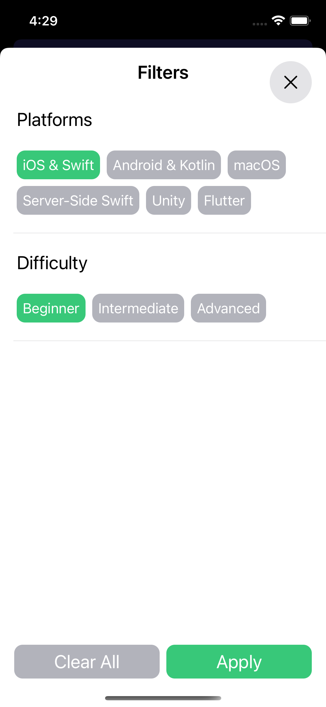
Selecting a button changes its color to green. You’ll implement these filters in Chapter 24, “Downloading Data”.
Note: To support Dynamic Type, FilterOptionsView uses built-in text styles like title2 and also uses AdaptingStack to switch from HStack to VStack when the user selects Larger Text in Settings.
➤ Tap the close button or Apply to dismiss this modal sheet.
Header view¶
Apps that download and display results from a server often include features like these:
- Let users enter a search term.
- Display any filters the user has set, and let the user remove one or all of them without showing
FilterOptionsView. - Let users select the sort order: newest or most popular.
- Display the number of fetched episodes.
A common solution is to add a header above the list. It would be natural to use a VStack for this:
➤ In ContentView.swift, embed the List in a VStack, then add HeaderView before the List:
VStack {
HeaderView(count: store.episodes.count)
List(store.episodes, id: \.name) { episode in
➤ Check that navigationTitle etc. modify VStack, not List: Collapse ToolbarItem to help you see where VStack ends, then move the closing brace of VStack to the line above .navigationTitle("Videos").
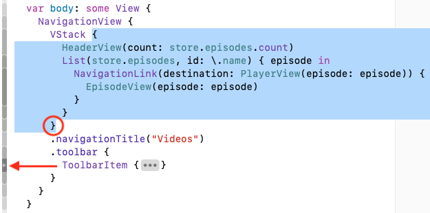
NavigationView has some odd bugs that show up at this point. The easiest fix is non-intuitive.
➤ Add this modifier to NavigationView:
.navigationViewStyle(StackNavigationViewStyle())
➤ Refresh the preview:
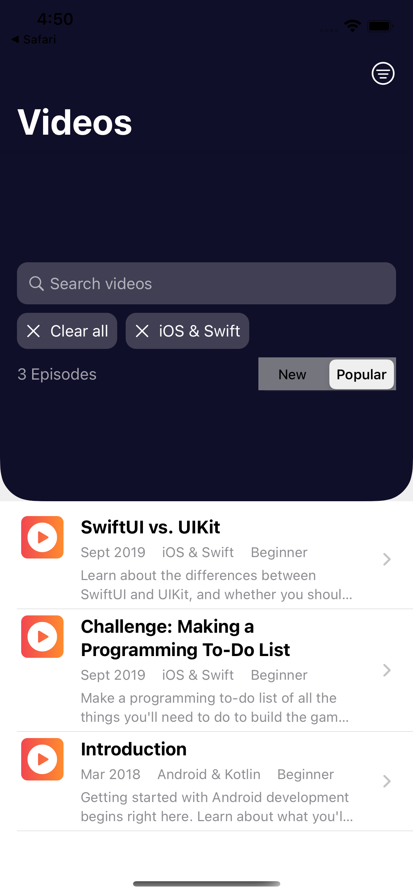
Not great. HeaderView is way too big. You could try to address this issue with modifiers, but there’s a much easier way.
Remember this List feature? You can display individual views and loop over arrays within the same List. The trick is to use ForEach to loop over episodes.
➤ Replace List with ForEach then replace VStack with List:
List {
HeaderView(count: store.episodes.count)
ForEach(store.episodes, id: \.name) { episode in
NavigationLink(destination: PlayerView(episode: episode)) {
EpisodeView(episode: episode)
}
}
}
List can show any list of views, but inside a List, you need ForEach to iterate over the episodes array. You’ll soon see that ForEach lets you customize each row too.
➤ Refresh the preview:

That’s much better!
Note: Thanks to Mojtaba Hosseini for the nifty cornerRadius(_:corners:) extension used to round only the bottom corners of HeaderView.
Your list and navigation are working. There’s just one last feature to add.
Page size menu¶
HeaderView displays the number of fetched episodes. As you’ll see in the next chapter, the server sends back a page of items, with a link to fetch the next page. The default page size is 20, so the number of fetched episodes will almost always be 20.
You’ll add a menu to let users change this number.
➤ In HeaderView.swift, in the HStack containing Text, Spacer and Picker, add this Menu between Text and Spacer:
Menu("\(Image(systemName: "filemenu.and.cursorarrow"))") {
Button("10 results/page") { }
Button("20 results/page") { }
Button("30 results/page") { }
Button("No change") { }
}
Menu is like the contextMenu you used in Chapter 15, “Structures, Classes & Protocols”, to delete a card element — in fact, it uses contextMenu under the hood — but it’s a button. The user doesn’t have to long-press it.
You’ll fill in the button actions in Chapter 24, “Downloading Data”.
➤ In ContentView.swift, refresh the preview and tap your new button:
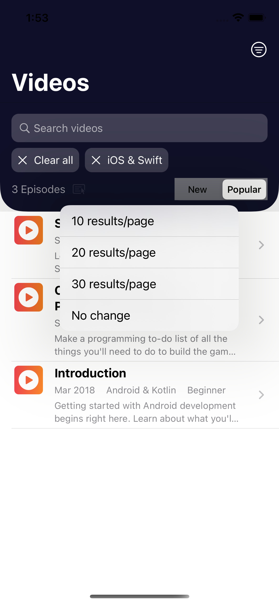
Custom design¶
Now it’s time to customize the list to match the Figma design.
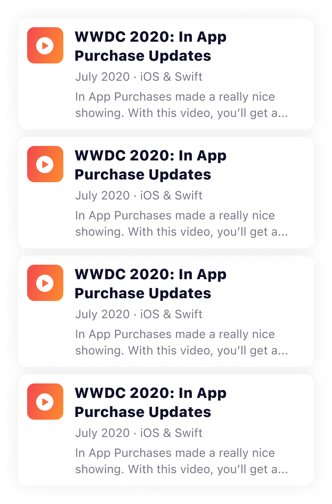
The Figma design configures each List row as a “card” with rounded corners and a shadow. There’s a small space between cards, but no list separator. And there are no disclosure indicators.
Creating a card¶
➤ In EpisodeView.swift, add these modifiers to the top-level HStack to make it look like a card:
.padding(10)
.background(Color.itemBkgd)
.cornerRadius(15)
.shadow(color: Color.black.opacity(0.1), radius: 10)
You add padding around the text and set the background color to white (Any Appearance) or a dark gray (Dark Appearance). This will make it, and its shadow, stand out against the List background, which you’ll soon set to light gray (Any Appearance) or almost black (Dark Appearance).
You round the corners, then set a shadow.
➤ In ContentView.swift, refresh the preview:
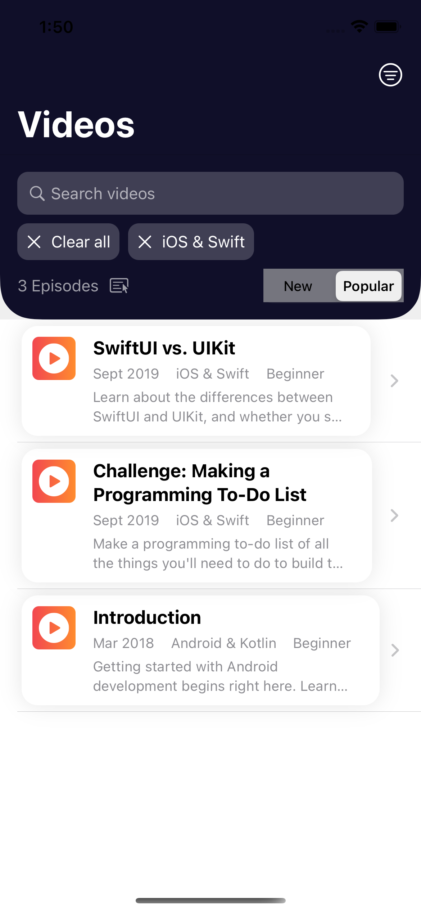
That’s a good start. The items look like cards, so now you don’t need the separator lines.
Hiding the list separator lines¶
You’ll hide the list separator lines by tweaking the row content.
➤ In ContentView.swift, add these modifiers to NavigationLink( ... ) { ... }:
.frame(
maxWidth: .infinity,
maxHeight: .infinity,
alignment: .leading)
.listRowInsets(EdgeInsets())
.padding(.bottom, 8)
.padding([.leading, .trailing], 20)
.background(Color.listBkgd)
Note: This is very similar to the code that extends the background color of HeaderView to the edges of the List row.
You expand the frame of each row and set all EdgeInsets to zero. Then, you add padding to separate the cards from each other and move them in from the sides. Finally, you set the List background to gray.
➤ Refresh the preview:

Great, no more separator lines!
Note: Even if you didn’t have to accommodate HeaderView, you’d need to switch to List { ForEach ... } to customize the list rows like this. ForEach functions like a view generator. Without ForEach, you can’t even modify the row background color: listRowBackground(_:) has no effect unless it’s inside a ForEach closure.
Now that you’ve customized the List row, it no longer changes color when the user taps it. But the disclosure indicator on the trailing edge of each List row shows it’s tappable, so it’s not too much of a problem.
Hiding the disclosure indicator¶
However… the disclosure indicator pushes the “card” out of alignment with the header view. And the Figma design wants it gone. So here’s how you hide it.
➤ In ContentView, replace NavigationLink( ... ) { ... } with the following:
ZStack {
NavigationLink(destination: PlayerView(episode: episode)) {
}
EpisodeView(episode: episode)
}
You embed NavigationLink in a ZStack, making sure the separator-hiding modifiers modify the ZStack, which is now the contents of the List row. Then you move EpisodeView(episode: episode) out of the NavigationLink closure, but still inside the ZStack.
EpisodeView isn’t in NavigationLink, so doesn’t have a disclosure indicator. The NavigationLink destination is unchanged, so tapping the row still displays PlayerView.
➤ Live-preview ContentView and tap an item to make sure the navigation link still works.
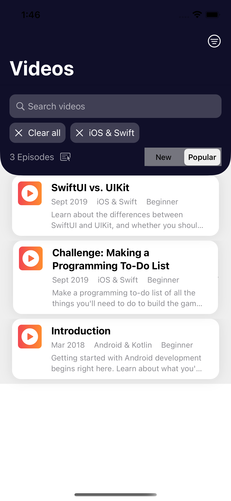
Actually, NavigationLink still displays a disclosure indicator, but it’s almost covered by the EpisodeView layered on top.
➤ To reveal the disclosure indicators lurking beneath, reduce the opacity of EpisodeView:
EpisodeView(episode: episode)
.opacity(0.2)
➤ Refresh the preview:

Yup, they’re still there. Depending on what you present in the row, you might not cover them completely. You don’t want to have to compromise your design just to hide these indicators, so here’s a solution that works for whatever row content you have.
➤ Add this modifier to NavigationLink( ... ) { ... }:
.opacity(0)
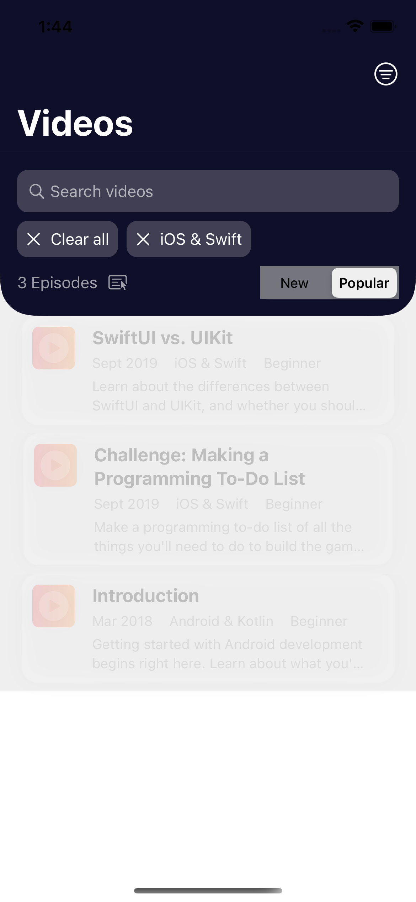
You make the NavigationLink view transparent, so it’s not visible at all!
➤ Remove .opacity(0.2) from EpisodeView(episode: episode).
There are just two fine points to take care of:
- Your future self, or someone who takes over your code, might wonder why there’s nothing in the
NavigationLinkclosure and might moveEpisodeView(episode: episode)back inside. - There’s no visual feedback when the user taps the row.
➤ To solve the first issue, add this view inside the NavigationLink closure:
EmptyView()
You explicitly display an empty view, so you know you did it on purpose.
➤ For the second issue, add this modifier to NavigationLink( ... ) { ... }:
.buttonStyle(PlainButtonStyle())
You apply PlainButtonStyle(), which shows a tiny visual effect when you tap a List row.
➤ Live-preview your app and try it out to make sure everything still works.
Running RWFreeView on iPad¶
There’s just one more thing: Check how your app looks on an iPad.
➤ If you have this modifier on NavigationView to fix the navigationTitle bug, comment it out:
.navigationViewStyle(StackNavigationViewStyle())
➤ Build and run on an iPad simulator:

The default navigation style on iPads is double-column, with the list in a sidebar. This is also the default style on Max iPhones in landscape orientation. When the app launches, it presents an almost-blank screen. You can specify an initial selected item to appear on launch.
➤ In ContentView.swift, add this line after .navigationTitle("Videos"):
PlayerView(episode: store.episodes[0])
➤ Build and run again:
Now the app launches with a PlayerView presenting the first episode.
But for RWFreeView, you’ll prevent your app from using this default style.
➤ Delete or comment out PlayerView(episode: store.episodes[0]) then add (or restore) this modifier to NavigationView { ... }:
.navigationViewStyle(StackNavigationViewStyle())
You tell the app to always use stack navigation on iPads and Max iPhones. This is the default navigation style for iPhones in portrait orientation and for non-Max iPhones in landscape orientation.
➤ Build and run again to see the List, just like on an iPhone. Then rotate to landscape:
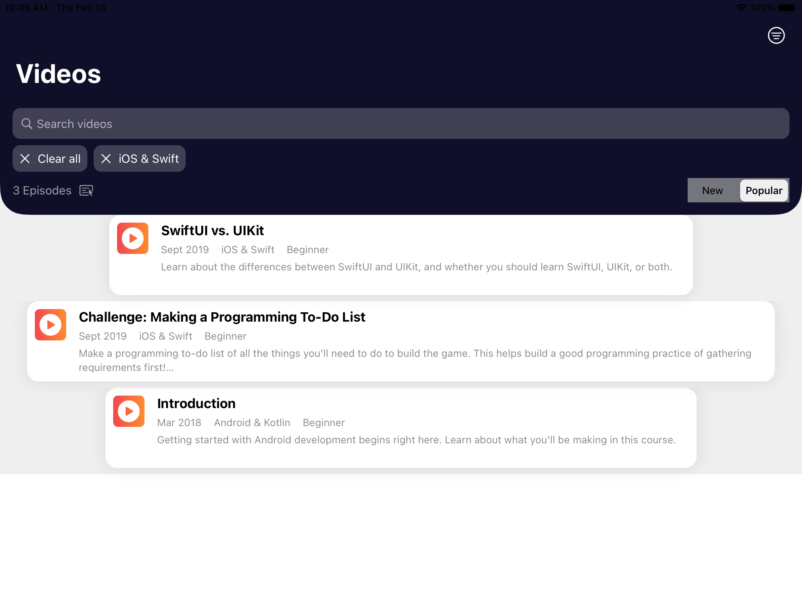
Yikes! In landscape orientation, the width of EpisodeView varies with the length of description. But the Figma design wants the List rows to be narrower than the iPad screen anyway, even in portrait orientation. Fixing the width at 644 allows 85 (footnote-size) characters per line, which is a comfortable reading width for most people.
➤ In EpisodeView.swift, add these properties to EpisodeView:
@Environment(\.verticalSizeClass) var
verticalSizeClass: UserInterfaceSizeClass?
@Environment(\.horizontalSizeClass) var
horizontalSizeClass: UserInterfaceSizeClass?
var isIPad: Bool {
horizontalSizeClass == .regular &&
verticalSizeClass == .regular
}
You check the device’s vertical and horizontal size classes. If both are regular, the device is an iPad.
➤ Now add this modifier to the top-level HStack, after padding(10):
.frame(width: isIPad ? 644 : nil)
You set width to 644 if the device is an iPad. Otherwise, you let the view set its own width.
➤ Build and run again on an iPad and check portrait and landscape orientations:

Looking good! Now you’re all set to learn how to download data from a server, after the next chapter, which covers some HTTP and REST API basics.
Key points¶
- The SwiftUI
Listview is the easiest way to present a collection of items in a view that scrolls vertically. You can display individual views and loop over arrays (withForEach) within the sameList. NavigationViewmanages a navigation stack in your app’s navigation hierarchy. Tapping aNavigationLinkpushes its destination view onto the navigation stack. Tapping the back button pops this view off the navigation stack.- A
NavigationViewcan contain alternative root views. You modify each with its ownnavigationTitleand toolbars. - Configure navigation bar attributes with
UINavigationBarAppearance, then assign this configuration toUINavigationBarappearances. Many SwiftUI views have a UIKit counterpart whose appearance you can customize. - It’s easy to open a web link in the device’s default browser using
Link.